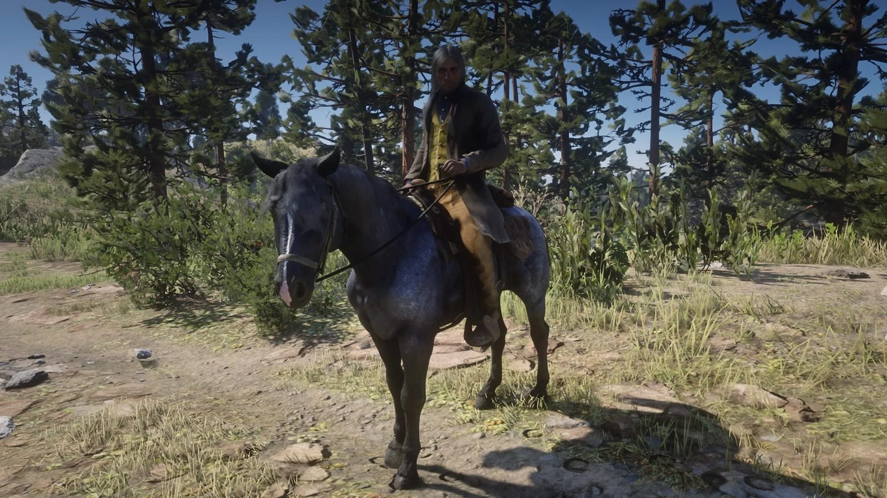
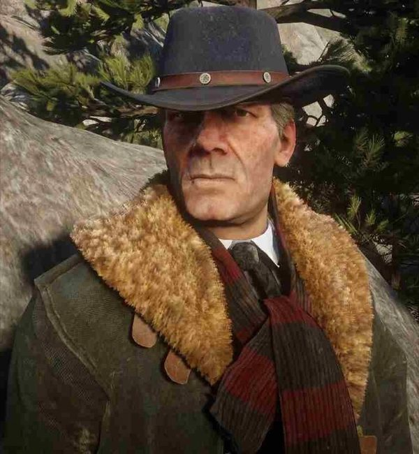
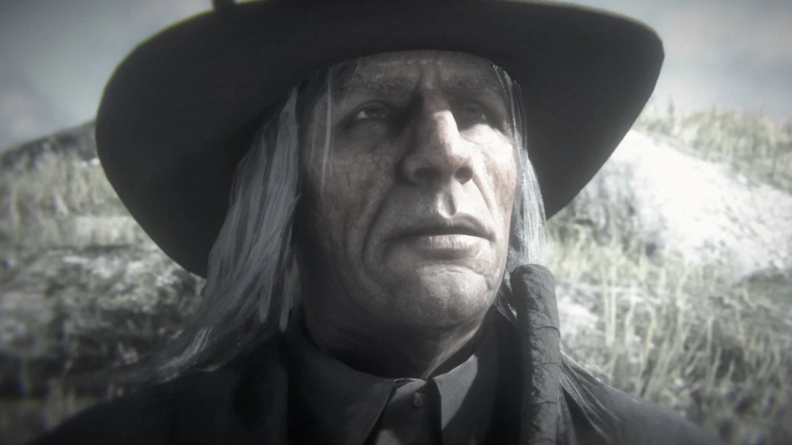
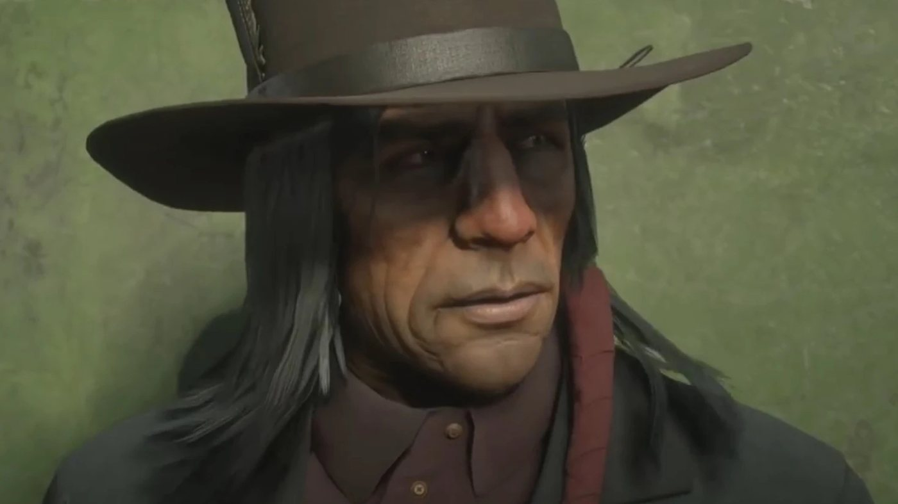
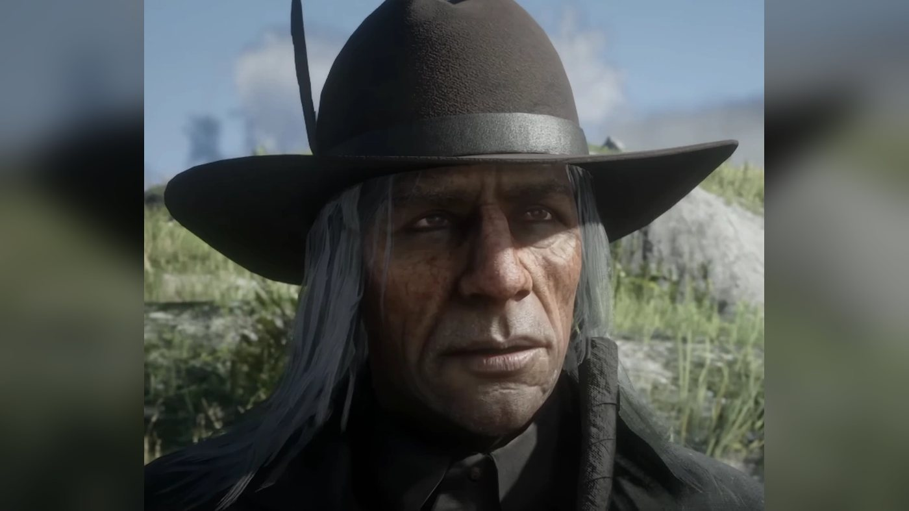

Character · Wapiti
Rains Fall
Rains Fall is the chief of the Wapiti, a fictional Native American people, in Red Dead Redemption 2 (2018), set in 1899. He says he has signed three treaties with the United States government and that each one was broken. When oil is claimed under the tribe's reservation, he looks for a peaceful way to keep the land: he seeks help from officials in Saint Denis with the writer Evelyn Miller, hires Arthur Morgan to obtain proof, and secures a meeting with Colonel Henry Favours of Fort Wallace. His son Eagle Flies chooses war instead, with the encouragement of Dutch van der Linde, and dies of a wound received at the oil fields. By 1907 the Wapiti have fled to Canada.
Charles Smith helps his people and leaves the gang to stay with them after the battle. Rains Fall is played by Graham Greene.
- Name
- Rains Fall (his English name)
- Aliases
- Chief Rains (Colonel Favours)
- Born
- Not given in the game
- Status
- Alive in 1907
- People
- Wapiti
- Occupation
- Chief of the Wapiti
- Residence
- Wapiti Indian Reservation, Ambarino (1899); Canada (1907)
- Family
- Eagle Flies (son, died 1899); his wife and an elder son (killed; a drunken soldier killed the son, by his account)
- Allies
- Arthur Morgan, Charles Smith, Captain Lyndon Monroe, Evelyn Miller
- Adversaries
- Colonel Henry Favours and the Army at Fort Wallace
- Games
- Red Dead Redemption 2
- Played by
- Graham Greene
Biography
Origins
The game gives no birth date and no age for Rains Fall. He is the chief of the Wapiti, a Native American people living on a reservation in the Grizzlies East, in Ambarino; the Red Dead Wiki says he became chief at some point before 1899. In a speech to his son in 1899, he says that he fought when he was young, that he saw death and that he killed, and that the men he knew were slain. He then made peace with the United States: he knew not to trust them, but says he had no choice. The same speech gives the fate of his family: his first-born son had his head smashed by a drunken soldier, and his wife had her throat slit. According to the Red Dead Wiki, it was also a soldier who killed her. His younger son, Eagle Flies, is the only child he has left.
In 1899 he sums up his people's recent history for Arthur Morgan in a few words: they fought, made peace treaties, saw the treaties broken, and were moved and punished again and again. He says he signed three treaties himself. The Red Dead Wiki reads them as two broken treaties and a third one that placed the tribe on the reservation. When Arthur first meets him, the writer Evelyn Miller adds that a new move would break a treaty signed three years earlier. On the road to Horseshoe Overlook, Hosea Matthews explains that the Native Americans of the region lost the Heartlands, good farming and grazing land, and were killed or herded onto reservations; the Red Dead Wiki links this account to the Wapiti.
Red Dead Redemption 2 (1899)
Chapter 1: Colter
In "Eastward Bound", the gang leaves Colter for Horseshoe Overlook. While Arthur, Hosea and Charles Smith refit a wheel on their wagon, three riders watch them from a cliff. The Red Dead Wiki identifies them as Rains Fall, Eagle Flies and Paytah, a Wapiti close to Eagle Flies. Rains Fall later confirms the sighting himself in Saint Denis: he tells Arthur that he saw him with the wagon train crossing the river at Cumberland Falls.
Chapter 4: Saint Denis
In "The Gilded Cage", Rains Fall and Eagle Flies attend the garden party of Henri Lemieux, the mayor of Saint Denis. From a balcony, Angelo Bronte points out the guests to Dutch van der Linde and Arthur, and mocks the chief and his son as they hand a letter to the mayor. The next day, Dutch mentions Evelyn Miller and the Native Americans to Arthur as people the gang could try to help. According to the Red Dead Wiki, the Army is trying to drive the Wapiti off their reservation because of the oil believed to lie beneath it.
In "American Fathers I", Evelyn Miller stops Arthur in front of the Saint Denis courthouse and introduces him to Rains Fall, presented as a great chief, and to his son. Rains Fall tells Arthur that his people are to be moved again. Eagle Flies predicts war; his father answers that the Wapiti cannot fight another war, because the other side has grown stronger and they have grown weaker. Miller explains that prospectors have reported large oil reserves under the reservation to Leviticus Cornwall and to the state government, and that he needs proof. Arthur first refuses, saying he is no do-gooder. Rains Fall then promises to pay him well, and Arthur accepts. The chief sends him to meet Eagle Flies a couple of days later near Citadel Rock, west of the oil fields.
The scene ends at the courthouse door. Eagle Flies calls the meeting with the officials a waste of time; Rains Fall replies that they must try everything. An official tells Miller that the councillor can now see them, and Miller decides that the senator can wait. In "American Fathers II", which Rains Fall does not attend, Arthur steals the documents from the Cornwall Kerosene & Tar refinery with the help of Eagle Flies, who pays him at the end of the mission.
Two issues of the Blackwater Ledger sold in 1899 cover the conflict around the reservation. "The Indian Trouble" (No. 67) reports growing tension between the Wapiti and the regiment of Colonel Henry Favours at Fort Wallace, and dismisses as falsehoods the tribe's complaints that supplies and medicine are being withheld. "Tensions High" (No. 69) says that the Wapiti remain warlike, "spurred on by their chief and his son", and that Fort Wallace has asked for more troops.
Chapter 6: Beaver Hollow
While Arthur is on Guarma, Charles spends time at the reservation helping the Wapiti; he tells Arthur so in chapter 5, on the way to Beaver Hollow. In "A Rage Unleashed", Eagle Flies rides into Beaver Hollow, escorted by Karen Jones and Javier Escuella: the Army has seized the tribe's horses. Asked how his father is, he answers that Rains Fall has confused wisdom with weakness. Charles reminds him that he told his father he would not fight over horses. Dutch decides to help anyway, and after the horses are taken back from an Army boat, Charles asks Arthur to go and talk to Rains Fall. The player can accept or decline.
If Arthur accepts, "Archeology for Beginners" opens the next morning in Rains Fall's tent. The chief hears Arthur cough, and Arthur tells him he thinks he is dying; Rains Fall answers that he hopes he finds peace. He then reproaches him for the raid with Eagle Flies, whom he calls an impetuous prince, and reports that Favours has already taken revenge: two women were assaulted by his men. He says he is a great disappointment to his son, who sees glory in death, and that Dutch talks a lot while his son is easily led. He asks Arthur to ride with him to a site in the mountains that has long been sacred to him, and promises to help with the cough.
Captain Lyndon Monroe catches up with them as they leave. He reports that the oil company has already received approval to drill on the reservation's land, despite his talks with the mayor and the Bureau of Indian Affairs in Saint Denis, and asks Arthur for help later; the player can agree or refuse. On the ride, Rains Fall says that Monroe was reassigned from a regiment in the north, that news of the conflict has reached Washington, and that the Army is not made only of bad men, just as his own people are not all good. Arthur can ask about Dutch, warn the chief that Dutch does not have Eagle Flies's interests at heart, talk about his illness and, according to the mission page, about his dead son Isaac.
Along the way, Rains Fall stops to pick herbs for Arthur's cough (see Chief, remedies and horses). When Arthur scares off wolves feeding on a dead horse instead of shooting them, the chief approves. If Arthur has already destroyed Bacchus Bridge with John Marston, Rains Fall points to the wreck, asks whether his son was behind it and, when Arthur says no, fears that the Wapiti will be blamed anyway. At the site, they find everything burned and the Chanupa, a ceremonial pipe, gone. Empty whiskey bottles lie on the ground, and Arthur spots an Army camp in the valley below; Rains Fall concludes that Favours' men did it.
Rains Fall breaks down: his people have been moved and stripped of everything, his three treaties have been broken, and now his people will want a war they cannot win. Arthur offers to get the Chanupa back, and the chief agrees on condition that no soldier is harmed. Arthur brings back the pieces from the Army camp. Rains Fall thanks him, says that even sacred things are only things and that people matter more, and asks whether anyone was hurt. If no one was killed, he praises Arthur's restraint, wishes his son had as much, and gives him an Owl Feather Trinket; otherwise he fears the Army's revenge.
In "The Fine Art of Conversation", Charles brings Rains Fall to Beaver Hollow, just after Josiah Trelawny has left the camp. The chief believes he has made progress: Favours has agreed to a meeting, although he has lied to him many times before. Since his own men may not carry arms, he asks Arthur and Charles to come, because outsiders at the table make lies, or worse, less likely. Arthur agrees after Charles insists. On the ride, Rains Fall says his son has too much of a mind of his own, and asks how he can persuade the young men not to fight back when medicine is withheld and sacred sites destroyed. He thanks Arthur for helping Monroe recover the vaccines. If "Favored Sons" has just been played, the mission page says Charles is angry that Dutch got Eagle Flies arrested, and Rains Fall adds that it will not help the tribe's case.
Rains Fall introduces his two companions to Favours and Monroe as friends of his people. Favours opens with a tirade: he calls the Wapiti little more than criminals who keep breaking treaties. Arthur, coughing, is taken to a tent, where he overhears that Favours means to have Monroe tried for treason and hanged. From the tent, Arthur hears Favours declare the treaty void and announce a new treaty granting new lands; back at the table, Favours says that the land the tribe occupies belongs to the United States government. Rains Fall ends the talks by bidding Favours good day and stands to leave. Favours then has Monroe arrested, and Arthur and Charles take a soldier hostage to free him. The Red Dead Wiki says that Rains Fall slips away during the gunfight that follows.
In "Favored Sons", which Rains Fall does not attend, Dutch, Arthur and Eagle Flies ambush an Army patrol in Cumberland Forest, and Eagle Flies is captured and taken to Fort Wallace. In "The King's Son", Charles waits for Arthur at the reservation and sends him into the chief's tent. Rains Fall calls his son foolish but still his son. He asks after Arthur's father; when Arthur says his father lived longer than was good for anyone, the chief replies that his own son probably wishes the same of him.
Rains Fall says that he has sought peace all his life but loves his son, and that the Army will hang him for treason. He rejects the charge: Eagle Flies is the son of the chief of a proud nation, and what Rains Fall calls treason is the hundred years or more of lies told to his people. He adds that Dutch has made relations with the Army worse than at any time in the last five years. When Arthur says that he and Charles will rescue Eagle Flies, Rains Fall says no. Arthur insists that he has little to lose and leaves with Charles. On the way to Fort Wallace, Charles tells Arthur that, according to Rains Fall, the talks with Favours were followed by reprisals: women taken and elders beaten. They free Eagle Flies from Fort Wallace that night, escape down the river in canoes, and Charles takes him back to his father on a soldier's horse.
In "My Last Boy", Eagle Flies rides into Beaver Hollow with armed warriors in war paint and asks the gang to ride with them against the Cornwall refinery. Rains Fall arrives behind them and orders everyone to stop. He tells his son about his own wars and his dead family, and says that the Wapiti must endure. He begs him not to die for pride and, as his chief, implores him. Eagle Flies answers that his father's words mean nothing to him and leaves with his men. Rains Fall then turns to Arthur, reminding him that he helped him before; he calls the attack a trap in which his son and his people will all die, and says the young men will be annihilated: the wars are over and the Wapiti have lost. Dutch learns in this way that Arthur has been helping the chief. Arthur agrees to go, followed by Charles, Dutch and most of the gang.
Rains Fall does not go to the oil fields. During the battle, Colonel Favours shoots Eagle Flies in the abdomen as he helps Arthur, and Arthur kills Favours. Arthur, Charles and Paytah bring the dying Eagle Flies back to the reservation. Rains Fall asks them to bring him in, and Arthur and Charles carry him into the tent, where he dies after a last moment with his father; the Red Dead Wiki describes the chief weeping over his last son. Outside, Charles tells Arthur that the Wapiti must move and that he will stay to help them, and tells the chief that they must pack. Arthur leaves the reservation; he does not see Rains Fall again.
Epilogue (1907)
The Wapiti leave the reservation after the battle. A 1907 article, "Pump Jacks Sit Silent", reports that the tribe went on the run after its attacks on the Army and the battle at the Cornwall factory, that many of its members were gunned down in Wyoming, and that a few are believed to have escaped into Canada. The same article says that the oil found near the reservation was minimal and that drilling has stopped. According to the Red Dead Wiki's quote list, Rains Fall tells John Marston in the epilogue that his people are no longer really a tribe, only a group of families, and that they are now in Canada.
This meeting is an optional encounter. During the epilogue, John can find Rains Fall at Annesburg station, where the Red Dead Wiki says he sits on a bench waiting for a train. According to the wiki, he knows John as one of Arthur's companions, has come back for a while to mourn Eagle Flies, whose death he has not gotten over, and also speaks of Arthur. After John's condolences, he takes the train back to Canada.
Epilogue 2: Beecher's Hope
Rains Fall appears in the last scene of the ending credits that follow "American Venom". The last shot shows him alone on a summit of the Grizzlies East. He follows an eagle with his eyes as it flies off, and wipes his eyes.
Personality
Rockstar's character descriptions of September 6, 2018 cover the Van der Linde gang and do not include Rains Fall; the words of Dan Houser, co-writer of the game and co-founder of Rockstar Games, on the character are quoted under Development and performance. In the game he argues for peace at every turn. He tells Arthur that he keeps trying to settle the tribe's conflict with the Army through negotiation, that war would be futile, and that he has never seen victory in killing. Arthur's journal and Arthur's words to Charles about him are given under Relationships.
In his own words
On the way to the sacred site in "Archeology for Beginners": "Brutality and beauty are both all around us, yet so often we're unable to see past our own grievances. This is what I try to teach my son." When Arthur brings back the pipe: "Even sacred things... are only things. People... the heart... matter more." On Captain Monroe: "The army aren't all bad men, just as my people aren't all good." In his tent in "The King's Son", after his son's capture: "People have lied to my people for a hundred years or more... that's treason."
Names
Rains Fall is the English form of his name. At the peace talks, Colonel Favours says he cannot pronounce "that silly name"; the chief answers: "In English they call me Rains Fall." Favours then calls him "Chief Rains", the alias listed by the Red Dead Wiki. His name in his own language is never given. Evelyn Miller introduces him to Arthur as "a great chief". Captain Monroe addresses him as "sir", and Eagle Flies calls him "Father". The French-language Red Dead Wiki names him Pluie-Battante. An earlier name, found on concept art, is given under Development and performance.
Appearance
He is an elderly man who wears his black hair long, with a red ribbon tied around one lock. According to the Red Dead Wiki, he looks visibly older in the 1907 ending credits than at the Annesburg station in the epilogue, where his appearance is unchanged from 1899.
Relationships
Eagle Flies
Eagle Flies is his younger son and his only surviving child (see Biography). In Saint Denis, Eagle Flies calls Arthur a mercenary. In front of Arthur, Rains Fall calls him "the impetuous Prince" and says that his son is "easily led". In "A Rage Unleashed", Eagle Flies says his father need not know about the raid and would rather live in ignorance.
Their split over war and peace, his capture, his father's plea at Beaver Hollow and his death in his father's tent are told under Biography.

Arthur Morgan
Rains Fall first sees Arthur with the gang's wagon train and meets him in Saint Denis. Their talks in his tent and on the ride of "Archeology for Beginners" (Arthur's illness, his son Isaac, his warning about Dutch) and in "The King's Son" are told under Biography.
After "Archeology for Beginners", Arthur writes in his journal that not long ago he would have found such a man weak and pathetic, and that he now sees him as "wise and thoughtful and sensible"; he would like to help him, or at least stop Dutch from pushing his son into something stupid. On the way to Fort Wallace he tells Charles: "I like Rains Fall." In "My Last Boy", the chief's plea to Arthur in front of the gang reveals their dealings to Dutch. In 1907, according to the Red Dead Wiki, Rains Fall speaks of Arthur to John (see Biography).

Charles Smith
Charles helps the Wapiti on their reservation from chapter 5 onward (see Biography), and he has told Rains Fall that he will not fight over the tribe's horses. Rains Fall tells Arthur that most of what he knows about Dutch comes from Charles. Charles persuades Arthur to come to the peace talks ("Do it for me"). After Eagle Flies's death, he tells the chief: "I'm sorry, but we... we must pack and move." He stays behind to help the tribe.

Dutch van der Linde
Rains Fall knows Dutch only by reputation. He tells Arthur that Dutch "talks a lot". After Eagle Flies's capture, he says he is sure Dutch means well but that "matters are more complex than he understands" (his view of the damage done to relations with the Army is told under Biography). At Beaver Hollow, Dutch praises Eagle Flies's courage just before the chief arrives to beg his son to stay; when Rains Fall turns to Arthur, Dutch asks: "You helped this feller, Arthur?"
Henry Favours
The colonel commands the regiment at Fort Wallace. Rains Fall describes him to Arthur: "he walks an old line, he's obstinate and he hates Monroe". His revenge for the raid, the failed talks and the shot that kills Eagle Flies at the oil fields are told under Biography. According to the Red Dead Wiki, Favours had agreed with Leviticus Cornwall to drive the tribe off its land.
Lyndon Monroe
"He's a good man, he wants to help," Rains Fall tells Arthur about Captain Monroe, whose news from Saint Denis, help with the vaccines and arrest at the talks are told under Biography. According to the Red Dead Wiki, Rains Fall is the only character to say Monroe's first name, once, in "The Fine Art of Conversation", and only if Arthur has not met Monroe before.
Evelyn Miller
The writer introduces Rains Fall and Eagle Flies to Arthur outside the Saint Denis courthouse and explains the oil claim and the treaty at stake (see Biography). In "The Gilded Cage", Dutch tells Arthur that Miller is lobbying officials in Saint Denis on the chief's behalf.

Leviticus Cornwall
The oil on the reservation ties Cornwall to the tribe's troubles (see Biography). The Leland Oil Development Company file on the oil near Wapiti, which Arthur takes in "American Fathers II", is kept in the foreman's office of the Cornwall Kerosene & Tar refinery. Rains Fall never meets him on screen.
Paytah
Paytah is Eagle Flies's companion. In "My Last Boy" he rides off with Eagle Flies despite the chief's plea. On the way back to the reservation with the dying Eagle Flies, he tells Arthur: "Better to die fighting than sick and weak."

Hosea Matthews
In "Eastward Bound", Hosea tells Arthur how the Native Americans of the Heartlands lost their land (see Biography), adding that he heard the Army there was particularly harsh about it.

Angelo Bronte
From a balcony at the mayor's party in "The Gilded Cage", Bronte points out Rains Fall and Eagle Flies to Dutch and Arthur (see Biography). He says he has no sympathy for them, since anyone stupid enough to be tricked by the Americans gets what they deserve.

John Marston
John is one of the gang members who volunteer to ride with the Wapiti in "My Last Boy". In 1907 he can meet Rains Fall at the Annesburg train station; according to the Red Dead Wiki, the chief knows him as one of Arthur's companions (see Biography).
Chief, remedies and horses
Chief and negotiator
As chief of the Wapiti, Rains Fall deals with the authorities on the tribe's behalf; his treaties, his appointments in Saint Denis and the peace talks are told under Biography. He offers to pay Arthur "very handsomely" for proof about the oil on the reservation. He says he is brokering peace and that Colonel Favours has agreed to a meeting, and he wants people from outside the tribe at the table, believing it will make lying harder for the Army.
Herbs and remedies
During the ride of "Archeology for Beginners", he stops twice to pick plants for Arthur's cough: English Mace, then ginseng. He puts them in Arthur's saddlebag with this advice: "Mix these together. They taste awful... but it'll help to keep your strength up." The mission page lists three English Mace among the rewards, and notes that English Mace and ginseng are two of the three ingredients of a Special Health Cure, the third being Yarrow. If no soldier is killed, he gives Arthur the Owl Feather Trinket, which can be obtained no other way. According to the Red Dead Wiki, the trinket slows the drain of the Health, Stamina and Dead Eye cores by 15 percent.
Horses
Rains Fall rides his own horse to the sacred site, to the gang's camp at Beaver Hollow and to the peace talks. The Red Dead Wiki lists three mounts for him: a Blue Roan Nokota, a Grullo Dun Mustang and a Tobiano American Paint.
Missions
The English Red Dead Wiki lists seven story missions of Red Dead Redemption 2 for Rains Fall, plus the ending credits and an epilogue encounter named after him. The French edition lists eight entries: it leaves out the credits and the encounter, and adds the mission "Red Dead Redemption", in which neither the mission page nor the transcript shows him. The table also adds missions where he is only mentioned or where his people's affairs move forward without him; it says so case by case.
| Mission | Chapter | Rains Fall's role |
|---|---|---|
| Eastward Bound | 1. Colter | One of three riders watching the gang's wagons from a cliff, according to the wiki. He later tells Arthur that he saw the wagon train cross the river at Cumberland Falls. |
| The Gilded Cage | 4. Saint Denis | Guest at the mayor's garden party with Eagle Flies. Bronte mocks the pair as they hand a letter to the mayor. |
| American Fathers I | 4. Saint Denis | Meets Arthur through Evelyn Miller outside the Saint Denis courthouse and promises to pay him for the Cornwall documents. |
| American Fathers II | 4. Saint Denis | Not on the wiki's list and absent. Arthur steals the papers with Eagle Flies, who pays him; the mission page gives a reward of 125 dollars. |
| That's Murfree Country | 5. Guarma | Mentioned only: on the way to Beaver Hollow, Charles tells Arthur he has met Rains Fall and Eagle Flies and has been helping at the reservation. |
| A Rage Unleashed | 6. Beaver Hollow | Mentioned only. Charles reminds Eagle Flies of his promise to Rains Fall, then asks Arthur to go and see the chief. |
| Archeology for Beginners | 6. Beaver Hollow | Mission giver (optional). Rides with Arthur to a sacred site, gathers herbs for him and, if no soldier is killed, gives him the Owl Feather Trinket for recovering the Chanupa. |
| Honor, Amongst Thieves | 6. Beaver Hollow | Not on the wiki's list and absent. Arthur and Captain Monroe recover vaccines meant for the reservation; Rains Fall thanks Arthur for it in the next mission. |
| Favored Sons | 6. Beaver Hollow | Not on the wiki's list and absent. Eagle Flies is captured after an ambush on an Army patrol with Dutch and Arthur. |
| The Fine Art of Conversation | 6. Beaver Hollow | Mission giver with Trelawny, per the mission page. Asks Arthur and Charles to attend his talks with Colonel Favours, which fail. |
| The King's Son | 6. Beaver Hollow | Receives Arthur in his tent after his son's capture and opposes a rescue, which Arthur and Charles carry out anyway. |
| My Last Boy | 6. Beaver Hollow | Tries to stop his son's war party at Beaver Hollow, then begs Arthur for help. Eagle Flies dies in Rains Fall's tent at the end of the mission. |
| Ending Credits | Epilogue 2: Beecher's Hope | Last scene of the credits: he watches an eagle from a peak in the Grizzlies East. |
| Rains Fall (encounter) | Epilogue | Optional encounter with John at Annesburg station; according to the Red Dead Wiki, he then takes the train back to Canada. |
Quotes
The lines below are given as spoken in the game, in the original English, with the mission and the person addressed. Mission lines are checked against a full transcript of the game; the epilogue line, which has no transcript, comes from the Red Dead Wiki's quote list. Lines already quoted under Personality or Relationships do not appear again here.
Chapter 4
Yes, my people, if we are even a people anymore... we fought hard... we've made peace treaties... and those treaties were broken... and we've been moved and punished and... punished and moved.
American Fathers I (RDR2, chapter 4), to Arthur, outside the Saint Denis courthouseNo, my son, it will not. We cannot fight another war. They have got stronger... and we have become far weaker, Mr. Morgan.
American Fathers I (RDR2, chapter 4), after Eagle Flies predicts that a new move will lead to war
Chapter 6
Yes, sometimes the correct path, the bravest path... is the least obvious, and also the gentlest.
Archeology for Beginners (RDR2, chapter 6), to Arthur, in his tent, after telling him of Colonel Favours' revengeMy son thinks there is glory in death. Maybe he's right... but for me... I saw death being handed out so freely by the most foolish of men... I never could equate it with victory.
Archeology for Beginners (RDR2, chapter 6), to Arthur, who has just said that his son seems to want a warThey moved us here. They've taken everything we had. I signed three treaties myself, and they've broken each one. Now they've taken the last hope... Now my people are gonna want a war. A war they can't win.
Archeology for Beginners (RDR2, chapter 6), at the burned sacred siteNow, he has lied to me more times than I care to remember... but maybe this time... he must want peace. Why could he possibly want to humiliate us further?
The Fine Art of Conversation (RDR2, chapter 6), to Arthur at Beaver Hollow, about Colonel FavoursMy son... my son is foolish but he's... still my son.
The King's Son (RDR2, chapter 6), to Arthur, in his tent after Eagle Flies's captureAll my life, I've tried to bring peace... but I love my son. They'll hang him for treason. He is the chief's son of a proud nation. How could he commit treason?
The King's Son (RDR2, chapter 6), to Arthur, after his son's captureMy son, my last son... When I was your age... I fought... I saw death. I have killed. The men I knew were slain. My first born, your brother... had his head smashed by a drunken soldier. My wife had her throat slit. We made peace. I knew not to trust, yet I had no choice. Maybe you were right... maybe the slow death is worse than a fast one. Maybe none of these men are good. Maybe a world in which they came to us... is a world that we cannot endure. But endure we must.
My Last Boy (RDR2, chapter 6), to Eagle Flies, at Beaver HollowDo not die for pride, my son. We have suffered too much in this trick. The earth, the water... they have no pride. They endure, and we must endure. My only boy... my precious boy... do not mistake my strength for weakness. As your chief, I implore you.
My Last Boy (RDR2, chapter 6), to Eagle Flies, who has just told him he is tiredThe wars are over... we have lost. These young men will be annihilated. Please.
My Last Boy (RDR2, chapter 6), to Arthur, after Eagle Flies rides off
Epilogue
Ah, well... my people aren't really a tribe, we're just a... bunch of families, I suppose... but we're in Canada now.
Epilogue encounter at Annesburg station (RDR2, 1907), to John Marston (Red Dead Wiki quote list)
About Rains Fall
Father has confused wisdom with weakness.
Eagle Flies, in A Rage Unleashed (RDR2, chapter 6), when Arthur asks how his father is
Development and performance
Casting
Rains Fall is played by Graham Greene, an Oneida actor from the Six Nations of the Grand River reserve in Ontario, born on June 22, 1952. Wikipedia credits Greene with both the voice and the motion capture of the character. Greene was nominated for the Academy Award for Best Supporting Actor for Kicking Bird in Dances with Wolves (1990). His other roles include Thunderheart (1992), Maverick (1994), The Green Mile (1999), Wind River (2017), the series 1883 (2022) and Reservation Dogs (2023). Insider Gaming noted in September 2025 that Rains Fall was his only video game role.
In a feature on the making of the game published by Vulture on October 14, 2018, Harold Goldberg called Greene "the most famous actor in RDR2" and wrote that the role, a small one, was close to the heart of Dan Houser, co-writer of the game and co-founder of Rockstar Games. Houser said: "He did such a brilliant job of bringing this chief character to life. The government is coming down on him hard. He's losing his rights as an independent king, and he's a gentle soul in that violent world. [Greene] bought [sic] this great depth to [the story]." In the same article, Houser explained that Rockstar no longer cast well-known actors, preferring performers whose voices players do not recognize.
Graham Greene died on September 1, 2025, at the age of 73, after a long illness. According to his manager, Gerry Jordan, quoted by Radio Canada International on September 2, 2025, he died in Stratford, Ontario, which CTV News reported the same day; some early reports had placed his death in a Toronto hospital. Gaming sites including Insider Gaming and RDR2.org marked his death by recalling the role of Rains Fall.
The Wapiti and the Lakota language
The Wapiti are a fictional people. Chris Plante wrote in Polygon's review, on October 25, 2018, that Rockstar had told him the tribe is "not modelled on a specific tribe". In "The Fine Art of Conversation", when they reach the meeting place, Rains Fall tells his waiting men that Arthur and Charles are friends, and the subtitle labels his line as Lakota; the Red Dead Wiki notes that the game's captions identify the Wapiti's language as Lakota.
Cut content
According to the Red Dead Wiki's page on cut content, concept art shows that Rains Fall was first named Rains Come; the drawings are filed under the name of the artist Daren Bader. The sacred site he visits with Arthur in "Archeology for Beginners" was labeled Cohutta on a leaked map, a name the final game does not use. The game files also contain an unused official, Mr. Pattison, meant to appear on the Wapiti reservation, and a cut system in which Wapiti warriors would have acted as lawmen in the Ambarino region.
Reception
Critics and scholars
In Polygon's review, Chris Plante wrote that the game's mixing of real peoples, places and groups produced story beats ranging "from benign to confused to insensitive and harmful". After Greene's death, Andrew Highton of Insider Gaming wrote on September 2, 2025 that "Graham absolutely nails the role perfectly", and Ray Ampoloquio of RDR2.org described Rains Fall as "a father figure and moral compass for Arthur Morgan".
In an article published in 2025 in the journal American, British and Canadian Studies, Andrei Nae of the University of Bucharest counts Rains Fall among the three Native American characters who matter to the game's story and play, with Eagle Flies and Charles Smith. He contrasts the two Wapiti: "While the elder Rains Fall is in favour of diplomatic solutions (in spite of the untrustworthiness of the federal government), the young Eagle Flies, under the negative influence of Dutch van der Linde, advocates for violent resistance." He argues that the game, while marking "a significant shift" in its portrayal of Native Americans, casts them in "the stereotype of the noble savage who cannot help themselves and are in need of a white saviour".
Other media and legacy
Rains Fall appears only in Red Dead Redemption 2. The Red Dead Wiki lists no Red Dead Online appearance for him. According to the Red Dead Wiki, the reservation has no inhabitants in Red Dead Online, the same state in which John finds it in 1907.
Trivia
- The wolves that Arthur scares off on the ride with Rains Fall are, according to the mission page, the only wolves in the game that are not hostile to the player.
- In early versions of the game, the sacred site could be found already burned in free roam from chapter 2 onward; according to the mission page, a later update leaves it standing until the mission is available.
- In "My Last Boy", Rains Fall uses the word "implore" to try to stop Eagle Flies, with John present. John uses the same word at Fort Mercer in 1911 when he tries to make Bill Williamson give himself up. Neither plea works.
- The Annesburg meeting in 1907 raises John's honor by a large amount, according to the Red Dead Wiki.
Gallery


